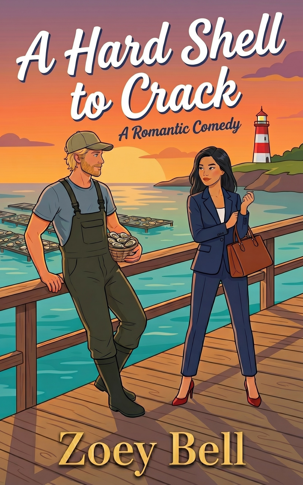

Sophia Chen doesn't do small towns. She does corner offices, killer heels, and closing deals that make grown men cry. So when her company sends her undercover to a remote Tasmanian coastal town to acquire a family oyster farm that's turned down every buyer for twenty years, she sees the VP promotion she's been chasing finally within reach. All she has to do is play the part.
There's just one problem: Jake Hartwell.
Grumpy. Sun-bleached. Infuriatingly perceptive. The oyster farmer sees through her "travel writer" cover story almost immediately — and he has zero interest in making her stay comfortable. Too bad his grandmother has already invited her to dinner, his sister has already claimed her as a best friend, and the rest of Coles Bay has already decided she belongs.
The longer Sophia stays, the harder it gets to remember which side she's on. Because somewhere between the oyster beds and Jake's rare, reluctant smiles, her carefully planned life starts to look like the wrong one.
But she's still lying to all of them. And the closer she gets to Jake, the more the truth is going to cost her.
A Hard Shell to Crack is a steamy, laugh-out-loud grumpy-sunshine romantic comedy. Perfect for fans of Meghan Quinn, Lucy Score, and anyone who's ever fantasized about ditching their corporate job for a coastal town with terrible Wi-Fi.
Perfect for fans of Meghan Quinn and Lucy Score.